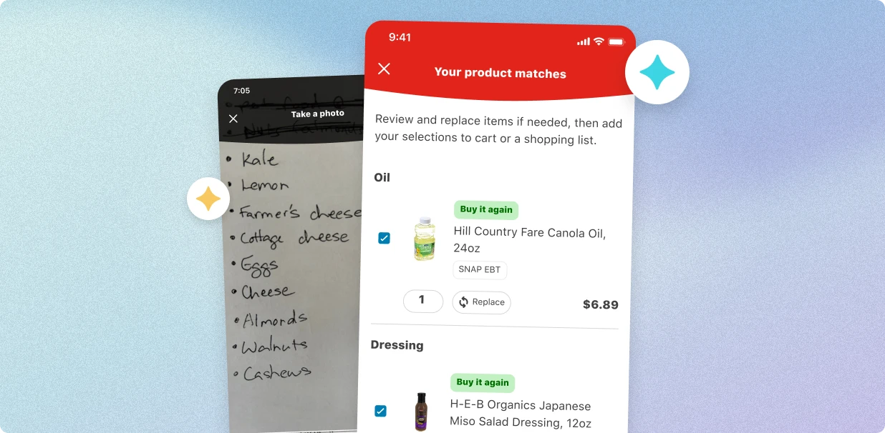
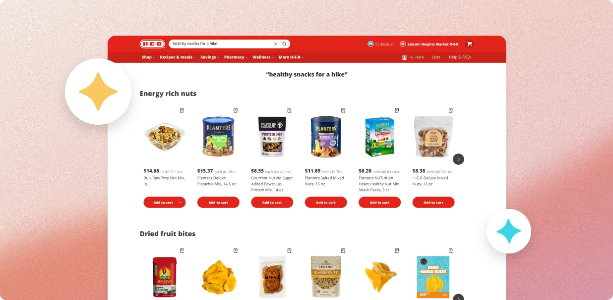
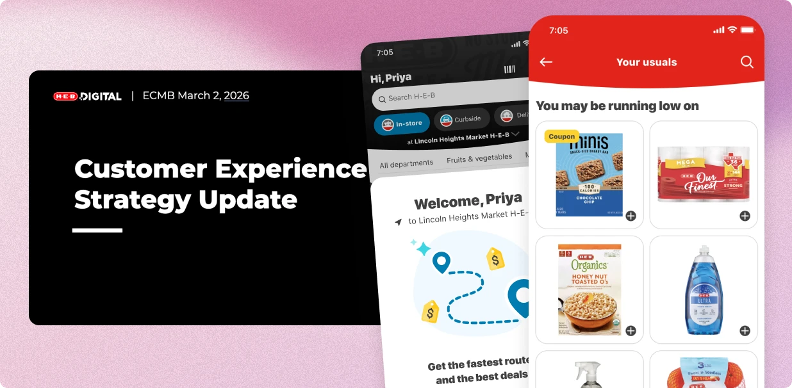
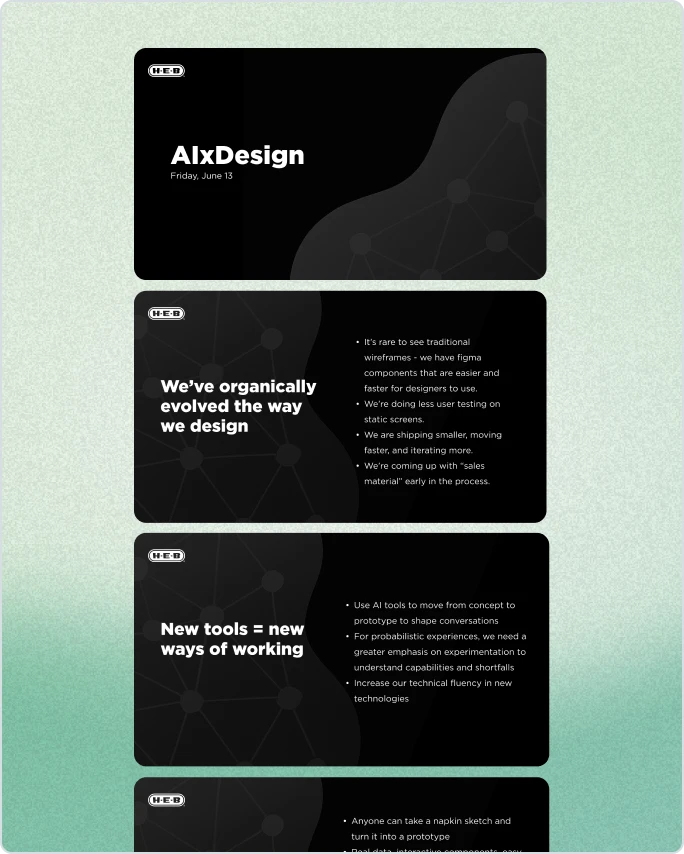
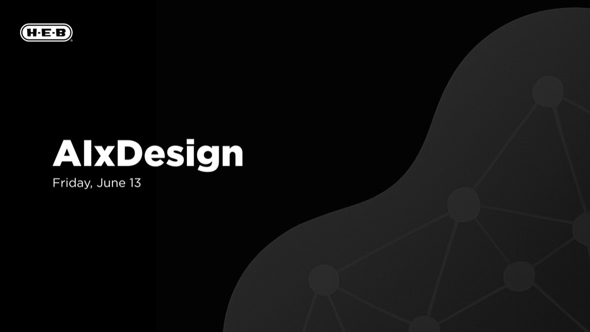
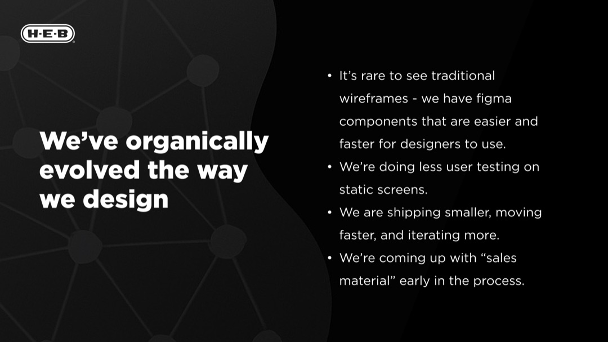
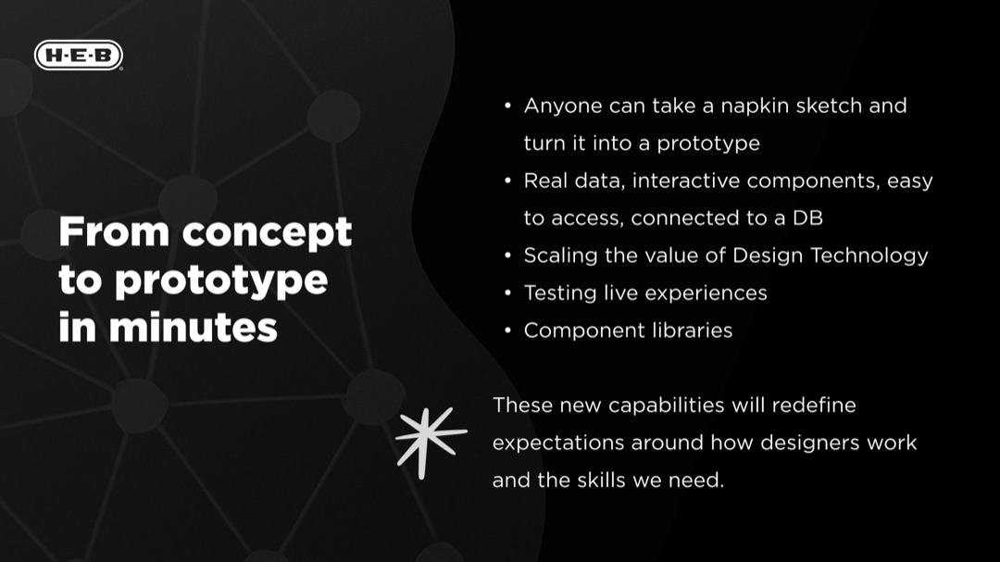
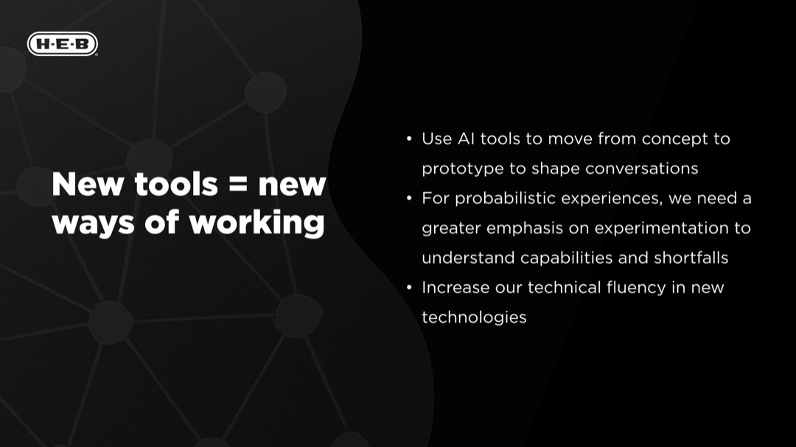
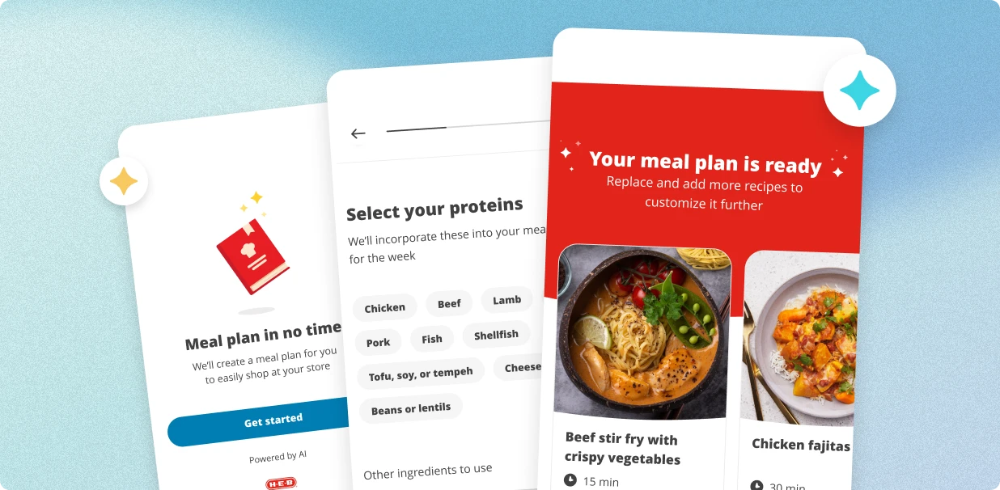

I’m a Staff Product Designer at H-E-B and am leading initiatives for AI and Personalization. I enjoy getting close to the material by building and testing functional prototypes that inform our vision and strategy. Lately, that has looked like exploring new design workflows by going from canvas to code with coding agents, leading prompt optimization for AI search, compiling datasets and running evals to shape LLM behavior, and tinkering with new tech to make sense of the possibilities for designers.
October 2026
Scan your list

I branched off an engineering POC for the first time and built a working iOS prototype with GitHub Copilot in our codebase. Because people could try the real thing, I got better feedback from testers and accelerated the decision making process. I also compiled a customer centric dataset of real shopping list images that the team used for LLM based evaluation.
May 2026
AI-assisted search results

I designed my POV for this experience, wrote the prompts that shape the queries, wrote the safety and responsibility instructions that block unsafe searches, ran evals to measure it’s performance, and supported internal testing to make the results were safe, useful and relevant. I am most proud of building and communicating a POV that steered us away from building a chat based AI search feature for our very first GenAI customer experience.
March 2026
A vision for My H-E-B

New executive leadership began asking Product to align on “who we want to be in the next 3 years”. I became the go to designer that was pulled into workshops with executive leaders, designed customer journeys that prompted discussion, and quickly built a functional prototype that conveyed the vision. The prototypes I built were turned into videos, circulated across the company, and resulted in new work streams across all of Digital.
June 2025
Making sense of the AI shift





As soon as Anthropic created the idea of an “artifact” in 2024, I saw the signs that AI-generated code could fundamentally change workflows for designers. I started experimenting on the side and sharing what I learned. I built demos, made videos, and talked about why we need to pay attention to whats happening. This case study showcases some communication artifacts I made along the way.
Feb 2024
Meal planning assistant

This was one of the first GenAI projects that kicked off as a learning initiative by our Data Science team. They built a chat bot recipe assistant called “Recipe Bot”. I saw past the UI and understood the potential of the technology powering it. I wanted to learn more, so I partnered closely with them, designed a user experience, and collaborated with them on writing the system prompt. It was my first time working directly with LLMs, and other ML based search techniques like semantic search and vector databases.